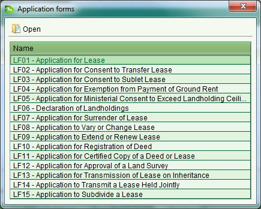

The Application Forms screen allows you to quickly access and print the application
form templates that must be filled in and submitted by clients when requesting
services from LAA. It can be accessed by clicking
 Application Forms.
Application Forms.

To view and/or print an application form, select it from the list and click
 Open. This will display the form template using the appropriate viewer allowing
you to save or print the form template.
Open. This will display the form template using the appropriate viewer allowing
you to save or print the form template.
Also See